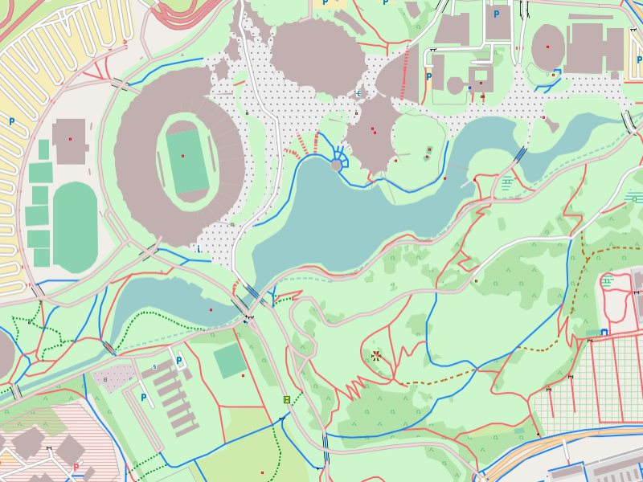

Garmin GPS-Gerät - Installation auf Micro-SD-Karte:
- Installationsimage der Freizeitkarte downloaden und entpacken
- (FAT32-formatierte) Micro-SD-Karte in Adapter einstecken und in Computer einlegen
- Datei "gmapsupp.img" in den Ordner "/garmin" auf Micro-SD-Karte kopieren
Microsoft Windows - Installation für Garmin BaseCamp:
- GMAP Installationsarchiv (komplett) der gewünschten Freizeitkarte downloaden und entpacken
- BaseCamp beenden (falls aktiv)
- Karte installieren (Doppelklick auf den ausgepackten GMAP Installer)
- BaseCamp starten

München: Der Olympiapark ist vermutlich Deutschlands bekannteste Sportstätte.
Apple macOS - Installation für Garmin BaseCamp via GMAP Archiv:
- GMAP Archiv der Freizeitkarte downloaden und entpacken
- BaseCamp beenden (falls aktiv)
- Karte installieren (Doppelklick auf GMAP Archiv)
- BaseCamp starten
Anmerkungen:
- für macOS und Windows wird ein installiertes Garmin BaseCamp vorausgesetzt
- für die Installation unter macOS ist zusätzlich das Programm Garmin MapManager erforderlich
- möglicherweise ist auf der Speicherkarte der Ordner "Garmin" zunächst anzulegen
- eine Installation der Karte in den internen Festspeicher des GPS-Gerätes wird NICHT empfohlen
- alternativ kann die Gesamtkarte auch via USB-Kabel auf die Speicherkarte im GPS-Gerät übertragen werden
- alternativ können einzelne Kartenkacheln via Garmin MapInstall auf die Speicherkarte übertragen werden
- die Anzahl der Anzeigedetails sollten in BaseCamp und im GPS-Gerät auf "Maximum" eingestellt werden